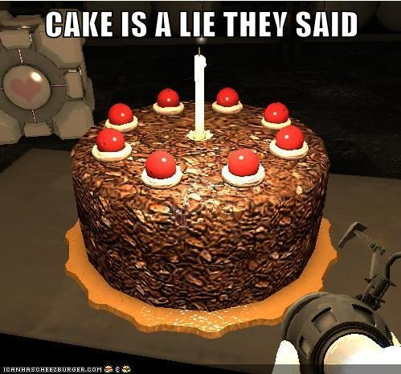

Dit gehaktbrood kan prima bij een avondmaaltijd, maar is ook een makkelijk gerecht voor een buffet.
Ingrediënten
1 rode paprika
1 groene paprika
1 ui
2 knoflook tenen
50 gram bacon
1 ei
1 blikje tomatenpuree
1 theelepel tabasco
peper
Bereidingswijze
Warm de oven voor op 175 graden Celcius
Maak de papika's shcoon en snijd ze in kleine stukjes. Maak de ui schoon en snijd deze fijn. Maak de
knoflook schoon. Snijd de bacon in dunne reepjes. Hak de peterselie fijn.
Doe het gehakt, paprika, ui, bacon, peterselie paneermeel, ei, tomatenpuree, tabasco en peper in een
kom. Pers de tenen knoflook erboven uit en kneed goed totdat alle ingrediënten zijn gemengd.
Druk het mengsel in een cakevorm en bak deze ongeveer 1 uur in de oven.
Haal de vorm uit de oven. Laat even afkoelen en haal het daarna uit de vorm. Serveer het gehaktbrood op
een schotel.
Gehaktbrood:Tip: Lekker met meergranenstokbrood. Voor een minder zout gehaktbrood kun je
de bacon
weglaten.
Cake
De Cake is een leugen, er is geen Cake, je bent gepranked kill
The lie:

The_cake_is_a_lie:thecakeisalie:
Kattenkruid
Meow, waar is kattenkruid????
Ingrediënten
kattenkruid
Bereidingswijze
open het zak
stop het in een bakje
zet het zak niet buiten berijk
geef bakje aan kat
kom er over een uur achter dat je kat het zak heeft gevonden
me irl:Tip:Misschien niet naar stap 3 en 5 luisteren.